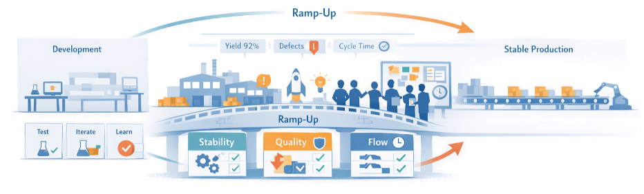
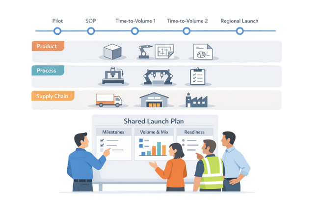
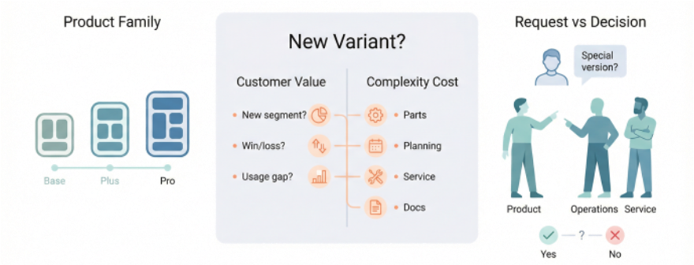
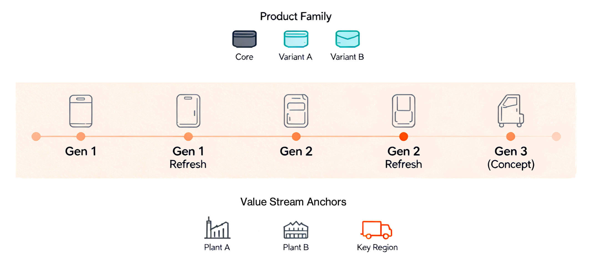

Chapter 8
When Decisions Become Real Flow at Scale
If scaling, launch, and lifecycle were designed as part of the same lean development system, what would we change about how we ramp, learn, and evolve this family over time?
Earlier chapters focused on designing the right products and value streams, validating them with experiments, and making knowledge-based decisions. Chapter 8 turns to what happens when those decisions become real flow at scale: how you ramp up safely, launch deliberately, and manage the product and process across their whole lifecycle — not just at the exciting start.
In LPPD, scaling and launch are not last-minute “industrialization” phases bolted onto development; they are integrated extensions of the same learning system. Pilots, ramp-up, and early field use are treated as high-leverage experiments on the full product–process–value stream system, and lifecycle thinking is built in from the beginning so that changes, variants, and end of life are handled with less chaos.
Section 8.1
From Prototype to Ramp-Up
Ramp-up is the bridge between development and full production: the phase where real product, real process, and real people meet at volume for the first time. Done well, it quickly stabilizes quality and flow; done poorly, it amplifies every unresolved issue from development, creating firefighting, scrap, and frustrated customers.

Goals: Stability, Quality, Flow
The purpose of ramp-up is not only to hit a volume number; it is to reach stable, capable flow at the planned volume and mix. Clarifying these goals up front helps teams treat ramp-up as a value creation phase with its own metrics and learning plans.
Stability
Processes, equipment, and ways of working that run predictably, with clear reactions to disturbances
Quality
Rapid learning curves that bring defect levels down to series production targets while protecting customers from early issues
Flow
A value stream that can achieve time-to-volume and takt objectives without chronic overtime, expediting, or hidden buffers
Roles and Collaboration in Ramp-Up
Successful ramp-up is inherently cross-functional. When collaboration is weak, issues bounce between functions; when it is strong, teams swarm problems at their source.
- Establish a joint ramp-up team with clear ownership, shared metrics, and direct access to decision-makers for fast escalation
- Co-locate engineering and operations near the line during early runs so design and process changes can be discussed and implemented quickly
- Run short, high-cadence meetings at the line to review yesterday’s performance, prioritize issues, assign problem-solving tasks, and confirm learning
Designing Ramp-Up as Experiments
Ramp-up is full of unknowns: real variation in materials, human work, equipment behavior, logistics, and actual demand. Instead of assuming the process will simply “scale,” plan ramp-up as a series of structured experiments and learning cycles on the full system.
- Define ramp-up stages (pilot, limited release, time-to-volume steps) with explicit learning objectives and acceptance criteria for each stage
- Instrument key processes so yield, cycle time, downtime, and problem types are visible daily, enabling rapid PDCA on the shop floor
- Use temporary standards, layered audits, and problem-solving routines to converge toward stable methods as learning accumulates
Section 8.2
Synchronizing Product, Process, and Supply Chain
Scaling a product is not just turning up the factory speed; it is synchronizing product, process, and supply chain so that material, capacity, information, and demand move in step. When misaligned, ramp-up generates shortages, firefighting, and expensive workarounds; when synchronized, time to volume shortens and early customer experience is far smoother.

Building a Shared Launch Plan
Most organizations have separate plans: a product plan, an industrialization plan, a sourcing plan, a logistics plan. Synchronization starts with a single, cross-functional launch plan that links these into one story.
- A small set of shared milestones (pilots, start of production, time-to-volume steps, regional launches) with clear owners and readiness criteria across product, process, and supply
- A single volume and mix ramp profile that everyone uses as the reference for capacity, inventory, staffing, and logistics preparation
- Explicit alignment on design freeze points, change windows, and cut-in/cut-out rules so engineering changes don’t surprise suppliers or plants
Capacity, Constraints, and Bottlenecks
Scaling will be limited by a few key constraints: critical components, tools, machines, skills, or logistics legs. Surface these early and treat them as part of the development problem, not just an operations headache.
- Map the end-to-end value stream from suppliers to customer for the target ramp profile, and mark potential bottlenecks (long-lead items, unique machines, specialized skills, regulatory steps)
- For each bottleneck, define a capacity plan and learning plan: experiments, pilots, and contingency options (second source, extra tooling, shift patterns, buffers)
- Use simple visual controls (e.g., a “critical chain” view or capacity ladder) so everyone can see which constraints are on the path to time to volume
Visibility and Daily Management During Scale-Up
Once ramp-up starts, synchronization becomes a daily management problem: keeping demand, production, and supply in balance while learning and adjusting. The goal is to reveal misalignments quickly, not to hide them behind averages.
- A joint daily or weekly scale-up huddle with representatives from production, planning, logistics, quality, and engineering looking at the same facts
- A tiered visual system (plant board, supply chain board, project/obeya board) so problems can be escalated fast with clear ownership and response paths
- Treat deviations as triggers for problem-solving and experiments, and feed what you learn back into both the ramp-up plan and future product introductions
Section 8.3
Designing Launch as a Learning Event
In many organizations, launch is treated as a one-time push: a date to hit, a checklist to clear, a party to celebrate. In LPPD, launch is designed as a learning event on the full system — product, process, customers, and value stream — where you confirm (or revise) the big bets you made earlier.

Launch Hypotheses and Success Criteria
Instead of “launch and hope,” teams enter launch with explicit hypotheses about how the product and value stream will behave in the real world. These go beyond sales targets to cover usage, reliability, service load, and economics.
Customer
Who will actually adopt first, how fast, and for which primary jobs or use cases
Operational
Expected ranges for uptime, defect rates, installation times, learning curves, and service calls in early months
Economic
Realized price, mix, margin, and key cost drivers at planned volume
For each area, define a handful of success criteria and guardrails (e.g., “no more than X% of installs require unplanned rework,” “field failure rate below Y ppm by month three”). These become the reference for monitoring and decisions during ramp-up and early market life.
Rapid Response to Early Problems and Opportunities
No matter how good the preparation, early launches always surface surprises. The difference in a lean system is how fast and how cleanly you respond — without destabilizing the value stream.
- Define a launch triage process: which issues trigger immediate containment (protect customers), which go into structured problem-solving, and which are logged for trend monitoring
- Keep a small, empowered launch response team (product, process, quality, supply chain, service) with authority to prioritize and coordinate fixes, experiments, and communication
- Protect the system from thrash: bundle non-urgent improvements into planned, tested change packages and cut-in windows, instead of pushing ad hoc changes through every day
Monitoring Early Market and Operational Signals
Launch floods you with signals. The challenge is to separate signal from noise and link it back to the launch hypotheses.
- Build a small launch cockpit that tracks a limited set of leading indicators across customer, operations, and economics (install lead time, first-time-right rate, top 5 failure modes, early adopter usage patterns)
- Establish short, regular launch reviews (weekly at first) where cross-functional teams look at the same data: “Which hypotheses are holding? Which are breaking? What’s emerging that we didn’t expect?”
- Combine quantitative data (dashboards, KPIs) with qualitative insight (field visits, installer and service interviews, key customer conversations) to understand the why behind patterns
Section 8.4
Managing Variants and Complexity
After launch, pressure for more options comes fast: new segments, special requests, regional needs, and “just one more feature.” Without a strategy, every new variant adds hidden cost in engineering, supply chain, production, service, and lifecycle management. In LPPD, variants are treated as deliberate bets on value, built on platforms and modules that let you offer meaningful choice without drowning in complexity.

When and Why to Add Variants
Not every request deserves a new variant. The key is to tie variety directly to customer value and economics, not to internal preferences or one-off deals. Ask these questions explicitly:
Which segments or use cases are we truly targeting, and where does additional variety actually change the decision to buy or stay?
Does a proposed variant create incremental value that clearly exceeds its added complexity in design, parts, planning, and service?
Could the need be met by reconfiguring existing options, changing sales packaging, or adjusting process/service instead of adding a new SKU?
Platform and Module Strategies in Scale-Up
The main antidote to variant chaos is a platform and module strategy: common architectures and modules that can be combined into many offers with limited unique parts. This lets you support variety where customers notice it, while keeping the “inside” simple for engineering and operations.
- Define a common product structure and clear module boundaries (e.g., power module, control module, interface kit, enclosure) with standard interfaces
- Decide deliberately where to postpone differentiation in the flow (late-point configuration) so upstream production and inventory stay as generic as possible
- Align platform rules with manufacturing and supply: shared components, tools, and work steps wherever possible to stabilize quality and reduce changeovers
Guardrails for Controlling Complexity
Even with good platforms, complexity will creep unless you set and enforce simple guardrails. These are not rigid bans; they are rules of thumb and decision checks that keep the product family manageable over time.
- Defined variant “slots” per family (e.g., max number of power levels, interface types, or regional versions) with clear criteria for adding or retiring one
- A lightweight review where proposed variants must show their incremental value vs. incremental complexity, including impact on inventory, changeovers, documentation, and service
- Regular portfolio “clean-ups” that remove low-value, high-complexity variants and fold their learning back into the platform and design rules
Section 8.5
Lifecycle Thinking and Roadmaps
Most organizations treat lifecycle topics — upgrades, variants, and end of life — as late, reactive conversations. In LPPD, lifecycle thinking is part of the development system from the start: each product family has a clear story for how it will evolve, how long it will live, and how it will eventually be replaced or retired.

Product Family and Lifecycle Maps
Lifecycle thinking starts with seeing the whole product family over time, not just the current model. A lifecycle map gives everyone a shared picture of “where this family is in its life,” making day-to-day decisions less myopic.
Today’s offer and variants; core vs. niche configurations
Upgrades, retrofits, and new options tied to market and tech shifts
Concept seeds from field learning; platform evolution path
Overlap periods, support commitments, and retirement criteria
Upgrades, Retrofits, and Generations
For many physical products, value comes as much from upgrades and retrofits as from brand-new introductions. Design with this in mind: interfaces, modules, and service strategies that allow the installed base to evolve without constant full redesigns.
- Design key modules and interfaces to be forward-compatible, so new options (control units, sensors, software, safety features) can be added to existing units
- Plan explicit upgrade/retrofit offers on the lifecycle map — technical concepts, business models, and service flows — rather than improvising when customers ask
- Treat each major generation change as a learning hand-off: what did the last cycle teach about reliability, usability, and economics that must be baked into the new platform?
Planned End of Life and Transition
End of life is usually where chaos shows up: last-time-buy scrambles, unsupported customers, orphaned variants. Lifecycle thinking means planning graceful exits as carefully as entries.
- Define end-of-life criteria up front (sustained drop in demand, technology obsolescence, excessive complexity, regulatory change) and review them periodically
- Map transition paths from old to new generations: overlap periods, support commitments, retrofit paths, and communication plans for customers, plants, and suppliers
- Use end-of-life reviews to capture final learning: which design and process choices aged well, which didn’t, and what that implies for future platforms and lifecycle strategies
When you plan the whole lifecycle this way, scaling, launch, upgrades, and retirement all become chapters in one coherent story.
Section 8.6
Learning from Scale and Lifecycle into Next Bets
Once a product is in the field and running at volume, you are sitting on the richest learning you will ever have about that offer and its value stream. The question is whether that learning is harvested and reused for the next ramp-up, the next platform, and the next value stream design — or whether it disappears into local fixes and war stories.

Capturing Knowledge from Ramp-Up and Launch
Treat those months as a field lab and harvest what they reveal. Focus on three areas:
Recurring failure modes, conditions where performance drifts, usability and installation friction, “hidden features” customers actually value
Where flow really breaks, which constraints were hardest to stabilise, what workarounds people invented on the line or in logistics
Which assumptions from development held up, which didn’t, and which experiments turned out to be most valuable (or missing)
Feeding Operational and Lifecycle Learning into LPPD
Operational and lifecycle learning only matters if it changes how you design and decide next time. Create deliberate channels from plants, service, and markets back into the LPPD system.
- Regular “learning from scale” sessions where operations, service, and development review the last ramp-ups and lifecycle phase, then translate top insights into concrete changes in standards, checklists, and design guidelines
- Update early-phase questions and knowledge-based milestones based on what really hurt (or helped) at scale — so new projects probe those issues earlier
- Make lifecycle patterns (upgrade demand, variant profitability, end-of-life pain points) visible on product family maps and roadmaps, so they directly influence platform and architecture choices
Practical Start: Upgrading Your Next Launch Plan
If you consistently close this loop, your organisation’s ability to scale, launch, and evolve products will improve project by project — making each “next bet” smarter, calmer, and faster than the last.